Climate
Page Overview
Define plant location, weather and atmospheric conditions, and properties of the sun's flux distribution on this page. The following input groups are discussed on this page:
Choose Climate/Location
Filter Locations By Name
Search the weather file list by text. The names that appear in the list are consolidated to match search text. This search box supports simple characters.
Weather File List
List of available weather files. The weather file serves as the basis of optimization when the Insolation Model is specified as "Weather File Data". The location specified in the selected weather file is used to calculate sun position.
Refresh List
Reload the list of weather files available in the weather file folder location.
Open Folder Location
Requests that the folder containing the weather files be opened.
To add weather files to SolarPILOT, copy the file into the folder location opened by this command and refresh the list of folders. Supported weather files include TM2, TM3, EPW, SAM CSV, SMW.
|
Weather File Data SolarPILOT supports several different weather file formats. This dialog provides more detailed information on the weather file formats and the data that they contain. This documentation was developed by Paul Gilman for NREL's System Advisor Model software. SolarPILOT can read a weather file in one of these formats that contains data from any source, as long as it is correctly formatted. You can use a spreadsheet program or other software create your own weather file in the SAM CSV format with data from a resource measurement program or meteorological stations. SAM CSVThe SAM CSV format is a comma-separated text format for SAM's solar performance models. It uses a standard CSV format that you can edit in any spreadsheet program, text editor, or other software. SolarPILOT recognizes the weather file's time resolution based on the number of data rows in the weather file. A file with 8,670 data rows is recognized as an hourly data file. By default, SAM calculates sun position angles at the mid-point of the time step. However, if you specify an optional minute column, SolarPILOT will calculate the sun position at the minute indicated in that column. SolarPILOT requires a valid value for all time steps for each data element. It does not fill data gaps. HeaderThe three header rows provide location information and metadata, and identify the data columns. Row 1 Row 1 contains labels for the location and metadata values in Row 2: Source,Location ID,City,State,Country,Latitude,Longitude,Time Zone,Elevation Row 2 Row 2 contains the data identified in Row 1. The source, location ID, city, state, and country are text values (strings) that provide information about the data, but are not used in calculations. They do not need to be enclosed in quotes. The latitude, longitude, time zone, and elevation are values that SAM uses in sun position calculations during simulations. For example valid values for Latitude,Longitude,Time Zone,Elevation for Phoenix, Arizona in the United States are: 33.433333,-112.016667,-7,339 Row 3 Labels identifying the data columns. SAM uses the labels to identify the columns, so they can be in any order: Year,Month,Day,Hour,GHI,DNI,DHI,Tdry,Tdew,RH,Pres,Wspd,Wdir,Snow Depth Row 4-8,760 (for hourly data, more rows for sub-hourly data) Data identified in Row 3. For example: 1988,1,1,0,0,0,0,5.6,-3.3,53,983,2.1,200,0 Data UnitsSolarPILOT assumes that the weather data uses the following units. (Note. The format does not require leading zeros in one-digit numbers.)
TMY3The TMY3 file format is a comma-delimited text format with the extension .csv. The first row of a TMY3 file stores data describing the location's name, and the geographic coordinates, time zone, and elevation above sea level data required for sun angle calculations. The second row stores the column headings showing units for each data element. Rows 3-8762 store weather data elements used by SolarPILOT's layout model. Many of the data elements are not used by SolarPILOT. Note. Opening and saving a TMY3 file in Excel can cause formatting changes that renders the file unreadable by SolarPILOT's weather file reader. Use a text-based data viewer to explore the data without modifying it. For a complete description of the TMY3 file format, see the TMY3 user's manual (PDF 1.7 MB) Tables 1-1 and 1-2 (p 3) describe the header data, and Table 1-3 (p 4-7) describes the weather data elements. TMY2The TMY2 file format is a text format with the extension .tm2. The TMY2 format is not delimited, which makes the data in the text file difficult to read. For a description of the data elements in the TMY2 format, see the TMY2 user's manual. The header elements are described in Table 3-1, and the weather data elements are described in Table 3-2. EPWThe EPW file format was developed for the U.S. Department of Energy's EnergyPlus building simulation model. EPW files store comma-delimited data, and use the extension .epw. The first eight rows of a file in EPW format stores header data. SolarPILOT's models use only the latitude, longitude, elevation, and time zone data from the header to calculate solar angles. The remaining 8,760 rows store weather data used by the SAM performance models and other data describing the quality of the data that SolarPILOT ignores. For more details about the EPW format see the Weather Data Format Definition page of the EnergyPlus Simulation Software website. SMWThe SMW format is a comma-delimited format with the extension .smw. The SMW format allows you to use weather data in different time steps. The SMW weather file format differs from the standard TMY2 and TMY3 weather file formats in the following ways:
Here's what the first four rows of an SMW file with hourly data might look like: 723860,"Clark/El Dorado",NV,-8.0,35.796245,-114.974334,548.64,3600.,2010,0:30:00 5.15,-4.7,-999.,46.4225,0.65,295.0,941.97,0.0,0.016517,0.0,0.23,-999. 3.85,-4.1,-999.,54.1635,0.35,245.0,944.99,0.0,0.008,0.0,0.23,-999. 2.95,-3.85,-999.,58.752,0.3,225.0,945.785,0.0,0.08555,0.0,0.23,-999. HeaderThe first row of an SMW file contains the header with the ten elements described in the table below separated by commas, and ending with a comma. The header columns cannot be separated by spaces or tabs. The data in columns 1, 2, 3, 7, and 9 are not used by the current version of the physical trough model.
*The start year has been included to make it possible to model calendar irregularities or holiday schedules, but is not used by the current version of SAM's SMW file reader. Weather DataThe second row of an SMW file contains weather data for the first time step, indicated by column 8 of the header row. The number of weather data rows depends on the time step. For example, for a 3600 second time step, the file would contain 8,760 weather data rows. Unlike the header information which must be comma-separated, the weather data columns can be separated by commas, tabs, or spaces. Each row may end with a separator character or not. SolarPILOT's SMW weather file reader determines the time stamp for each row based on the start time and time step from the header and the row number. You can indicate unused weather data elements with the value -999. For example, in the data shown above for the physical trough model, the global horizontal radiation, diffuse horizontal radiation, albedo, and snow depth columns contain the value -999 because the model does not use those elements. Table: Weather data record format by column number.
|
Location Information
Location values loaded from the selected weather file.
City
City name specified in the selected weather file.
State
State name specified in the selected weather file.
Timezone
Time zone specified in the selected weather file. Time zone "0" corresponds to 0-GMT, (-) time zones are west of GMT, (+) time zones are east of GMT (generally speaking). The time zone indicates the hour offset for the selected location.
Elevation
The site elevation above sea level for the selected weather file.
Latitude
The site latitude for the selected weather file. Latitude is (+) in the northern hemisphere and (-) in the southern hemisphere. Latitude must be between -90° and +90°.
Longitude
The site longitude for the selected weather file. Longitude is (-) in the western hemisphere and (+) in the eastern hemisphere. The magnitude of the longitude value increases as the distance from the prime meridian increases. Valid longitude values lie between -180° and +180°.
Atmospheric Conditions
Jump to Sunshape model; Insolation model; Atmospheric Attenuation Model
Specify properties of the sun shape, choose the model for solar insolation as a function of sun position, and specify the model for atmospheric attenuation loss.
Sunshape model
Choose the model for sun shape. The apparent shape of the sun is more technically described as the profile of flux intensity as a function of angular displacement from the center of the sun's disc. In other words, a measurement device with a vanishingly narrow acceptance window that views the sun at the center of the solar disc will see maximum relative intensity. As the device sweeps away from the center point, the measured intensity will decrease until only ambient scattered light is visible. The profile of intensity measurement as a function of displacement angle is called "sun shape". The following figure from Buie (2003, Fig 3) illustrates this concept, as a large number of measured sun shapes are overlaid on a single plot.
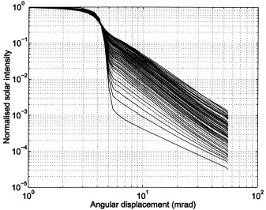
(Credit: Buie, D., Monger, A., & Dey, C. (2003). Sunshape distributions for terrestrial solar simulations. Solar Energy, 74(March 2003), 113–122.)
Sun shape is an extrinsic property that depends on local atmospheric conditions, including atmospheric depth, precipitable water, aerosol content, and incidence angle of the sunlight through the atmosphere. SolarPILOT includes several different modeling approaches for sun shape, including an option for user-definition.
The radius of the solar disc is typically in the range of 4.60-4.75 mrad (0.263°-0.273°), with 4.65 mrad offered as a typical value.
Pillbox Sun
The "pillbox" sun shape (also known as the "square wave" sun shape) is a simple binary distribution in which flux is assumed to be equally distributed within a specified disc. The region outside the disc is modeled with zero flux intensity. This is an idealized case but may be useful for certain analyses.
Sunshape Angular Extent
The maximum radius of the solar disc. The region within this disc emits irradiation of uniform intensity. The complement of this region emits no irradiation.
Gaussian Sun
The Gaussian sun shape is a Gaussian (standard normal) distribution centered on the centroid of the solar disc with standard deviation equal to the Sunshape Angular Extent Value. This model is an approximation with limited accuracy, but is useful for parametrically considering the impact of sun shape on designs of interest.
Sunshape Angular Extent
The standard deviation of the Gaussian distribution.
As the standard deviation decreases, the fraction of power emitted near the centroid of the solar disc increases. Conversely, an increase in standard deviation "spreads" the sun shape profile, and an increasing proportion of irradiation is emitted away from the disc centroid.
Limb-Darkened Sun
Selects the Limb-Darkened Sun option. This model specifies sun intensity as a function of angular distance from the centroid of the sun disc, as shown in the following equation:
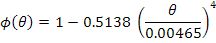
where
|
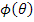 |
Intensity profile of the sun as a function of displacement angle |
|
Displacement angle from the centroid of the solar disc |
Point Sun
The sun is represented as a single point. Normalized intensity at the sun position is equal to 1.0 and is equal to 0.0 in all other locations. This models incoming irradiation as uniform and parallel.
Buie CSR Sun
The sun is modeled using the profile described in Buie, Monger, & Dey (2003) and Buie, Dey, & Bosi (2003). The model determines the sun shape profile with a parameter called the "circumsolar ratio".
Circumsolar Ratio
The circumsolar ratio (CSR) determines the extent to which the pillbox distribution of the sun's intensity profile is distorted and scattered. A CSR of 0 indicates a pillbox sun shape.
The CSR is defined as the radiant flux contained within the circumsolar region of the sky divided by the incident radiant flux from the direct beam and aureole.
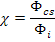
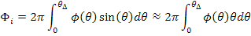
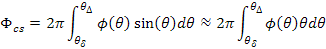
where
|
Intensity profile of the sun as a function of displacement angle |
|
|
Displacement angle from the centroid of the solar disc |
|
|
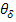 |
Radial angular bound of the direct beam region |
|
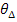 |
Radial angular bound of the circumsolar region |
The angular limit for the direct beam region depends on the DNI measurement device (pyroheliometer), but typically ranges between 5° and 7°. For highly scattered sun shapes, the circumsolar region may extend beyond the acceptance window of the pyroheliometer. However, irradiation at higher incidence angles is unlikely to be useful for tower systems where the focal length between the heliostat and receiver is quite large. The angular limit for the circumsolar region is typically 4.65 mrad or 0.266°, though it varies slightly with Earth's orbital position.
User Sun
The user sun option allows specification of a sun intensity profile as a function of radial angular position away from the centroid of the solar disc. SolarPILOT assumes the intensity profile to be rotationally symmetric.
Specify the normalized solar intensity profile in each table row along with the radial angular position in units of milliradians. The first entry in the table should be at 0 mrad, and the angular position must increase monotonically. The angular step size does not need to be constant.
Normalize the solar intensity profile such that the peak solar intensity has a value of 1.0.
Rows
Specify the number of entries in the user sun shape table. The number of rows is automatically determined when importing a data table from file. The table may have up to 1000 entries, though 100 entries is the recommended maximum.
Import
Import an existing sun profile from a file. The file may have extension *.sun, *.txt, *.dat, *.csv and be delimited by space, tab, semicolon, or comma. Each angle and intensity data point should be on a unique line.
When importing, SolarPILOT will automatically populate the table with the entries in the file. Any file header or blank lines should be removed before importing.
Export
Saves the contents of the sun shape table to a file. You may choose the location and name of the file to be exported.
User Sun Position Table
The sun position table contains all data entries. Entry values may be altered by modifying the values in the table manually.
Insolation Model
SolarPILOT determines the intensity of DNI and other weather values during layout simulations using the specified Insolation Model. Several different weather data models are included in SolarPILOT. The most straightforward model is the weather file data in which actual weather data (either continuous or in typical meteorological form) is provided. Other options involve approximations for daily sunlight intensity as a function of site location and elevation, atmospheric moisture, and/or atmospheric pressure.
Several insolation models including Meinel, Hottel, Allen, and Moon were transposed from DELSOL3 unchanged. See the DELSOL3 User Manual for more detailed information on cited literature. This discussion focuses on usage requirements for each model.
Several models make use of the extraterrestrial solar radiation. This quantity varies by location and throughout the year and is calculated as follows:
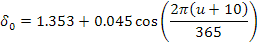
where:
|
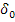 |
Extraterrestrial radiation intensity (kW/m2) |
|
Day number of the year |
The various models are shown for an altitude of 0.65 km and 1 atm as a function of solar position.
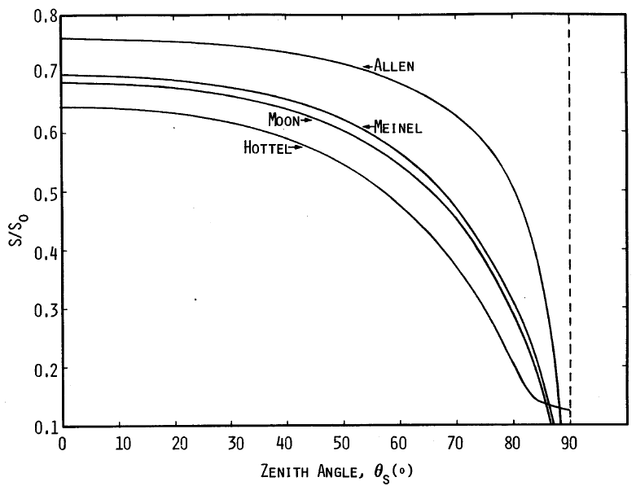
(Credit: Kistler, 1986, Fig III-1)
Weather File Data
Use hourly weather data from the selected weather file to determine insolation and atmospheric conditions for layout simulations. The weather data file option is the only insolation model that accounts for site-specific weather variability and local weather trends throughout the year, and so is best suited to determine the optimal layout for sites with asymmetric daily insolation profiles.
Meinel Model
The Meinel model calculates solar intensity as a function of extraterrestrial radiation, site altitude, and solar zenith angle.
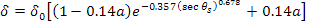
where:
|
Radiation intensity (kW/m2) |
|
|
|
Site altitude (km) |
|
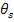 |
Solar zenith angle (rad) |

Hottel Model
The Hottel model calculates solar intensity as a function of extraterrestrial radiation, site altitude, and solar zenith angle. This model uses three regression terms that depend on altitude.

where:
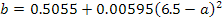
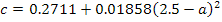
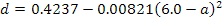
Remaining equation terms are defined as described in the Meinel Model.
Constant Value
DNI is assigned a constant value for all layout simulations, with solar field delivered power depending only on the optical efficiency impact of changing sun position.
Constant DNI for Layout Calculations
Specify the constant DNI value used during layout calculations. This value will not impact the final layout, but does impact the ranking metric value. The ranking metric value is shown on the Layout Results page by selecting Ranking Metric in the Plot Display dropdown.
Allen Model
The Allen model calculates insolation as a function of extraterrestrial radiation, air mass correction factor, precipitable water, and atmospheric pressure.
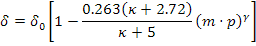
where:
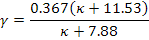
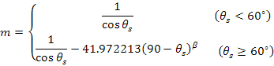
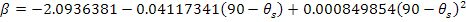
and:
|
Angular correction factor |
|
|
Overhead precipitable water (mm) |
|
|
Atmospheric pressure |
Atmospheric Precipitable Water
The depth of precipitable water along a vector from the site location to zenith. This value is an indication of the absolute humidity.
Ambient Pressure
An average ambient atmospheric pressure for the site.
Moon Model
The Moon model is similar to the Allen model, but uses an alternate regression form.
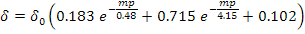
Refer to the Allen model definition for additional equation terms.
Ambient Pressure
An average ambient atmospheric pressure for the site.
Atmospheric Attenuation Model
The atmospheric attenuation model determines the fraction of energy that is lost from each heliostat by atmospheric scattering. Attenuation is expressed as a fractional loss as a function of straight-line distance between an individual heliostat and the focal plane of the receiver (slant range).
The attenuation options specify equation coefficients, and three options are available - discussed below. The attenuation equation is a single-dimensional polynomial.
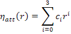
where:
|
Attenuation coefficient i, where i is in the range of 0-3 |
|
|
Distance between the heliostat and the receiver (slant range) |
The following plot from Kistler (1986) shows typical clear and hazy day from Barstow, CA. These curves are implemented as the "DELSOL3 Clear Day" and "DELSOL3 Hazy Day", respectively.
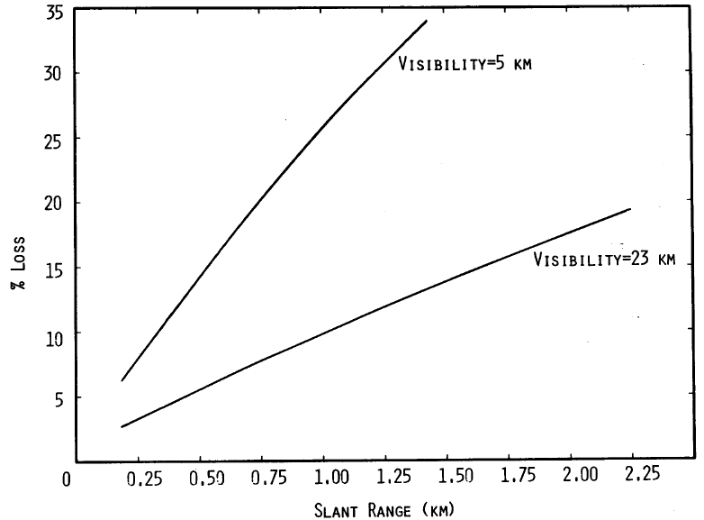
(Credit Kistler 1986, Fig. III-2)
|
Use Caution in Modeling Atmospheric Attenuation SolarPILOT provides sample cases for "clear" and "hazy" days in Barstow, CA, based on measurements taken several decades ago near the Solar Two project site. NREL recommends potential plant locations be screened for atmospheric aerosol and water vapor conditions for a period of time before final design and productivity analyses are completed. Uncertainty and variability in attenuation behavior should be thoroughly understood and incorporated into technology models as part of the design process. Existing literature is inconclusive on the best way to predictively model ground-level attenuation, as local environmental factors, geographical features, proximity to human development, time of day and year, and other factors can all impact the optical properties of air. First-principle models for attenuation are therefore complex and expansive, and their general reliability for all potential power tower applications has not yet been demonstrated. The SolarPILOT attenuation model is contrastingly simplistic, and the user is encouraged to approach this optical loss conservatively. The loss incurred from the point of reflection to the receiver is usually significant, especially at the outer reaches of the heliostat field. Attenuation loss is similar to intercept factor loss in that it increases with distance. However, unlike intercept loss, attenuation loss cannot be counterbalanced by altering the receiver geometry. Attenuation behavior can ultimately determine the viability of a power tower technology for a given site. For relevant literature, see:
|
DELSOL3 Clear Day
Use the clear day profile (visibility 5 km).
DELSOL3 Hazy Day
Use the hazy day profile (visibility 23 km).
User-Defined
Manually specify coefficient values for the attenuation loss polynomial.
0th Order Coefficient
Polynomial constant term [-].
1st Order Coefficient
Polynomial linear term [1/km]
2nd Order Coefficient
Polynomial quadratic term [1/km2]
3rd Order Coefficient
Polynomial cubic term [1/km3]
Attenuation at 4 Tower Heights
The polynomial evaluated at a radial distance of 4 times the tower height. This value provides an indication of the typical average attenuation loss in the solar field and is provided as reference only. Attenuation is evaluated during simulation for each heliostat individually.
Created with the Personal Edition of HelpNDoc: Easily create EPub books